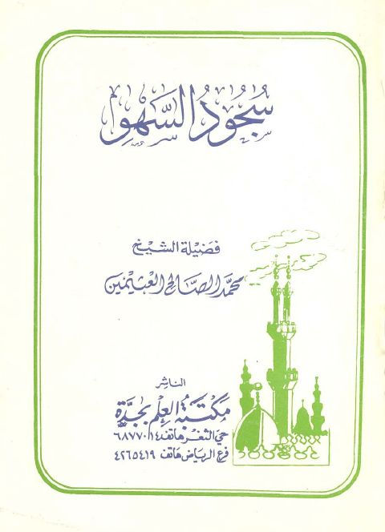
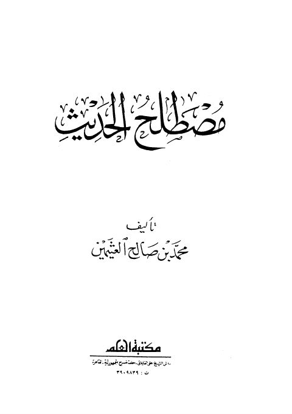

Publishers
مكتبة العلم بجدة
Publisher
Resources

سجود السهو
سجود السهو
محمد بن صالح العثيمين
نتائج الأفكار في تخريج أحاديث الأذكار- مكتبة ابن تيمية
نتائج الأفكار في تخريج أحاديث الأذكار- مكتبة ابن تيمية
أحمد بن علي بن حجر العسقلاني

مصطلح الحديث- مكتبة العلم
مصطلح الحديث- مكتبة العلم
محمد بن صالح العثيمين